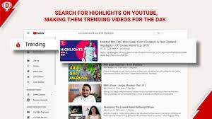
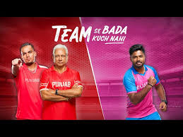

How India's fantasy sports giant turned cricket passion into a marketing system — using precision media placement and cultural scale to dominate a category it created.
Dream11 has not just advertised a product — it has consistently built campaigns that sit inside India's cricket culture. Instead of treating marketing as interruption, the brand uses behavior, timing, and emotion to become part of how fans experience the game.
At its core, Dream11's marketing works because it aligns three things perfectly: audience behavior, cultural timing, and product relevance. Cricket in India is not just a sport — it is emotion, identity, and daily conversation. Dream11 uses this reality as the foundation of its marketing.
This case study breaks down two powerful campaigns: Hijacked Highlights — a precision media strategy masterclass — and Team Se Bada Kuch Nahi — a cultural scale and mass reach campaign that drove massive app downloads during IPL.
During the ICC Cricket World Cup, Dream11 faced a major challenge. Competing brands were spending heavily on official sponsorships. Instead of fighting on budget, Dream11 changed the game entirely.
The brand identified a powerful insight: millions of cricket fans search for match highlights on YouTube immediately after games. This created a high-intent moment — users were already engaged, emotionally invested, and actively consuming cricket content.
"When you match the right message with the right moment, even a simple creative can outperform expensive campaigns. Precision outperformed budget — a benchmark for smart media strategy."
Dream11 placed pre-roll ads on these highlight videos, designed to feel like part of the cricket ecosystem — almost like official sponsorship content. This made the message feel natural rather than intrusive. The result: significantly higher engagement rates, improved click-through rates, better video completion, and strong brand recall with minimal creative complexity.

While Hijacked Highlights focused on efficiency, this campaign focused on scale. Dream11 wanted to expand beyond core cricket fans to reach casual IPL viewers, entertainment-driven users, and non-traditional fantasy sports participants.
The insight: not every IPL viewer is deeply analytical about cricket. Many watch for entertainment, celebrities, and social engagement. The campaign centered around team loyalty, rivalry, and emotional connection — how fans identify with teams, players, and competition.
"Dream11 created a content ecosystem — not a single ad. Cricketers + Bollywood celebrities + digital creators allowed the campaign to work across multiple audience segments simultaneously."
Distributed across television, streaming platforms, YouTube, and digital media, the campaign included a strong promotional layer through contests and incentives — giving users a clear reason to download and participate. The result: major increase in app downloads, expanded user base, and strengthened brand visibility across India.

Targeting match highlight viewers was not a creative decision — it was a behavioral insight. Understanding when fans are most emotionally engaged created the perfect message moment.
Cricket moments are predictable, seasonal, and emotionally intense. Dream11 aligns every campaign to those windows — reducing cost of attention because it already exists.
The Hijacked Highlights campaign proved that smart placement outperforms spending. Putting the right message in the right high-intent moment is worth more than mass impressions.
Team Se Bada created multiple films, celebrity integrations, and digital assets — a content ecosystem that covered all audience segments simultaneously with consistent brand messaging.
Every Dream11 campaign includes a clear, low-friction conversion layer — contests, incentives, and direct download CTAs that translate mass awareness into measurable app installs.
When a brand becomes part of culture, marketing stops feeling like marketing and starts feeling like participation. Dream11 is now inseparable from the IPL experience for millions.
Both campaigns follow very different approaches, but they are built on the same foundation: understanding the audience deeply and aligning marketing with real behavior. The first campaign shows how precision can outperform budget. The second shows how scale requires storytelling and cultural relevance.
Together they highlight a powerful framework for modern marketing: enter existing attention, build emotional connection, and create a clear path to conversion. This reduces cost, increases engagement, and improves conversion because the audience is already mentally invested.
Dream11's real success is that it positions itself as part of the cricket experience — not as an advertiser within it. That distinction makes all the difference between a campaign that interrupts and a brand that belongs.
At Brand Business Talk, we help brands with research, strategy, market insights, and growth recommendations. Let's build your brand growth strategy together.